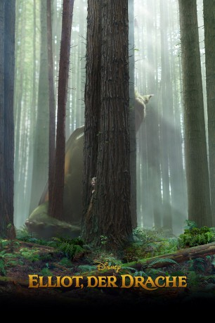

gesehen am 03.12.2016
gesehen am 03.12.2016Alternativ: Pete's Dragon gesehen am 03.12.2016
 
 IMDB-Wertung: 7.0 / 10
IMDB-Wertung: 7.0 / 10  Metascore:
Metascore: 
Seit Jahren erfreut Holzschnitzer Mr. Meacham die Kinder aus der Nachbarschaft mit Geschichten über einen wilden Drachen, der in den tiefen Wäldern des Pazifischen Nordwestens lebt. Für seine Tochter Grace, Försterin in der Umgebung, waren diese Geschichten nie mehr als Legenden, bis sie den Jungen Pete kennenlernt... Der mysteriöse Zehnjährige hat weder Familie noch ein Zuhause und behauptet, zusammen mit einem gigantischen grünen Drachen namens Elliot in den Wäldern zu leben. Auf wundersame Weise hat das Wesen aus Petes Beschreibungen große Ähnlichkeit mit dem Drachen aus Mr. Meachams Geschichten. Zusammen mit der elfjährigen Natalie, der Tochter von Sägewerkbesitzer Jack, macht es sich Grace zur Aufgabe, Petes Herkunft und das Geheimnis seines Drachens zu lüften..
Jahr: 2016
Dauer: 102 Minuten
FSK: 6
Land: USA Studio: Cinecolor FilmsTonspuren: DD5.1 - ,
Untertitel: Deutsch, Englisch,
Auflösung: 1080p (1920x800) Größe: 8120 MB
Genre: Abenteuer, Fantasy, Familie
Regisseur: David Lowery
Drehbuch: Jason Horwitch
Soundtrack:
Darsteller:
 Bryce Dallas Howard als Grace
Bryce Dallas Howard als Grace Robert Redford als Meacham
Robert Redford als Meacham Oona Laurence als Natalie
Oona Laurence als Natalie Wes Bentley als Jack
Wes Bentley als Jack Karl Urban als Gavin
Karl Urban als Gavin Isiah Whitlock Jr. als Sheriff Gene Dentler
Isiah Whitlock Jr. als Sheriff Gene Dentler Marcus Henderson als Woodrow
Marcus Henderson als Woodrow Aaron Jackson als Abner
Aaron Jackson als Abner Phil Grieve als Bobby
Phil Grieve als Bobby Jim McLarty als Ranger Wentworth
Jim McLarty als Ranger Wentworth John Kassir als Elliot Vocals
John Kassir als Elliot Vocals Bart the Bear als Bear
Bart the Bear als Bear Craig Hall als Adult Pete , uncredited
Craig Hall als Adult Pete , uncreditedDatei: X:\Kinder Disney HD\Elliot\Elliot, der Drache (2016, FSK6, 1920x800).mkv seit 23.11.2016
Festplatte: Kinder-Filme+Trick
 Alle Filme aus Gruppe 'Kinder Disney HD\Elliot'
Alle Filme aus Gruppe 'Kinder Disney HD\Elliot'